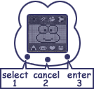
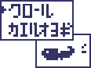
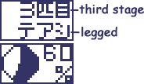

<HTML><BODY>
<CENTER>
<TABLE WIDTH=640 BACKGROUND="header.gif">
<TR><TD HEIGHT=82>&nbsp &nbsp<A HREF="index.html"></A></TD></TR></TABLE>
</BODY></HTML><HTML>
  <HEAD>
   <TITLE>Keroppi Kero-Pet Translated!</TITLE>
</style>
   <STYLE TYPE="text/css">
   <!--
    TD  {font-family: comic sans ms; color: 333366  }
    P {color: 333399; font-size: 20 }
    .big {font-size=20 }

   -->
    </STYLE>
  </HEAD>
  <BODY BACKGROUND="stars.gif" bgproperties="fixed">
    <CENTER>
    <TABLE WIDTH=640 BACKGROUND="kero/k1.gif" BORDER=2px BORDERCOLOR="#669966">
   <TR>
    <TD><FONT FACE="comic sans ms" COLOR="#333366"><HR>Thanks to Val of <A HREF="http://www.tinkerville.com">Tinkerville</A> for sending in these instructions! <BR><HR>
<B class="big">Before you start the game, you have <BR>to complete the following two steps!</B><BR><BR>
1. Remove the battery tab from the unit<BR>
2. Set the clock.<BR>
  Use the 1 button to change the hours and the 2 button to change the minutes.  Use the 3 button to set the time.  Press the 3 button once more to view the 'Donut Pond' screen.  Pressing the 1 or 2 button for about 2 seconds will take you back to the clock screen.<BR><BR>
<CENTER></CENTER><BR>
<B>Sound On/Off</B><BR>
On the main character screen, press the 2 button while holding down the 1 button to turn the game sound on and off.<BR><BR>
<B>Playtime</B><BR>
<TABLE BORDER=1 BORDERCOLOR="#333366"><TR><TD>From 6:00AM to 11:00PM</TD></TR></TABLE>
Outside of this time period, the screen will automatically show the clock.<BR><BR>
<B>Game Start</B><BR>
<TABLE BORDER=0><TR><TD></TD><TD>
In Donut Pond you will find five frog eggs!  Use the 1 button to choose one egg from the group and press the 3 button to select it.  You can't change your mind once you've chosen, so think about it very carefully.</TD></TR></TABLE><BR>
If your tadpole dies, the skull mark will appear  and then the screen will automatically go to clock mode.  Try selecting another egg and starting again.<BR>
<CENTER></CENTER>
You can only raise one character per day so be careful!<BR><BR>
<B>Tadpole development</B><BR><BR>
<CENTER><TABLE BORDER=0><TR><TD>
First Stage<BR>Tadpole Egg<BR><BR></TD><TD>
Second Stage<BR>The tail appears<BR><BR></TD><TD>
Third Stage<BR>The legs appear<BR><BR></TD><TD></TR></TABLE></CENTER>
Your 'stage-up' progress can be monitored with the Development meter which starts at zero.<BR>
If you don't look after your tadpole properly, it won't turn into a character that day, so be careful!<BR>
If you raise your tadpole well, you'll clear the game and one character per day will be born.  When Keroppi appears, you'll see a very fun ending.<BR>
You can see the ending as many times as you like by pressing the 2 button (but only for that day).<BR><BR>
<B>Restarting the game</B><BR>
Eggs that you have already chosen will turn black.  Choose a different egg to start again.  If you don't get Keroppi within 3 times, the game will automatically return to giving you 5 egg options.<BR><BR>
<CENTER><TABLE BORDER=0><TR><TD></TD><TD>Only one character will appear per day.  After an appearance you can only practice the game [presumably for that day].<BR> Press the 2 button to see the character moving.</TD></TR>
</TABLE></CENTER><BR>
<CENTER><TABLE BORDER=0>
  <TR><TD VALIGN=top></TD><TD><B>Weather</B><BR>Choose between sunny and rainy.</TD><TD></TD></TR>
  <TR><TD VALIGN=top></TD><TD><B>Water Temperature</B><BR>Choose between 'low', 'medium' and 'high' water temperatures.  It seems that the preferred temperature changes depending on the day.</TD><TD></TD></TR>
  <TR><TD VALIGN=top></TD><TD><B>Swimming</B><BR>You can choose either 'crawl' (top option) or 'frog swim'.  It seems that Keroppi is especially good at 'crawl'.</TD><TD></TD></TR>
  <TR><TD VALIGN=top></TD><TD><B>Play</B><BR>
Musical note : singing <BR>
Ribbon : dress-up <BR>
Glasses : pranks <BR>
Flask : inventing/research <BR>
Swimming Trunks : diving <BR>
Think carefully about the personality of the character you want to see when choosing from these activities.  Although play is a keypoint, it is also important not to play too much.</TD><TD></TD></TR>
<TR><TD VALIGN=top></TD><TD><B>Feeding</B><BR>Tadpoles have the option of water fleas (top option) or flaked fish</TD><TD></TD></TR>
<TR><TD VALIGN=top></TD><TD><B>Catch Game</B><BR>You can play the game when teruteru appears.  Try to catch the blocks by pressing the button that corresponds with the area where each block is falling.  You win if you can catch the block within 3 tries.  If you succeed a character will be born, so try your hardest.  Once a character appears you can practice as much as you want.</TD><TD></TD></TR>
<TR><TD VALIGN=top></TD><TD><B>Development Meter</B><BR>Press the 3 button to check on the progress of your egg.  Press the 1 button to find out the meter fullness of your character.  If you don't take good care of your character, the meter can decrease so be careful.  The third stage is the most important to pay attention to!  It is possible that no matter how hard you try, the meter will not increase that day.</TD><TD>
</TD></TR>
<TR><TD VALIGN=top></TD><TD><B>Call Icon</B><BR>Help your egg hatch into a character quickly.  When your keroppi is just relaxing and having free time, it will call you and light up this mark.  Pressing any button once will turn it off.</TD></TR></TABLE></CENTER><BR>
<B>Character Introductions</B><BR>
<CENTER><TABLE BORDER=0 width=550><TR><TD ALIGN=center> <BR>1. Keroleen<BR> A fashionable and cute princess.<BR></TD>
<TD ALIGN=center><BR>2. Ganta<BR> A strong guy who likes to play pranks. </TD>
<TD ALIGN=center><BR>3. Kyorosuke<BR>  His specialty is diving so <BR>he has good eyesight.</TD></TR><TR>
<TD ALIGN=center><BR>4. Noberun<BR> He is knowledgeable and likes inventing things. </TD>
<TD ALIGN=center><BR> Teru Teru and Den Den also make an appearance!</TD>
<TD ALIGN=center><BR>5. Keroppi<BR>  I think everyone knows me, but I'm good at singing and so I am very popular at Donut Pond.  I like adventure and so I'm very genki.</TD>
</TR></TABLE>
[the official Sanrio Keroppi info can be found <A HREF="http://www.sanrio.co.jp/english/characters/keroppi/kr02.html">here</A>]<BR><BR></CENTER>
<TABLE BORDER=0><TR><TD VALIGN=top></TD><TD><B>Advice from Keroppi<BR></B>
A different character will hatch from each egg.<BR>
Fill your meter to raise Keroppi and his friends!<BR>
After you raise one character, the game gets harder.<BR>
Use the meter button to check on the character you've hatched.
Your character's number is the one on the top. </TD></TR></TABLE><BR><BR>
<TABLE BORDER=0><TR><TD></TD><TD>
<B>Keroppi's "Why can I never seem to raise a character" hints for you.</B><BR>
(people with lots of confidence might not want to look at these)</TD></TR></TABLE>
1. Each time you execute a command, be sure to check your meter! (If the points (%) go down. take note!)<BR>
2. If you keep letting your tadpole play, it will die. (try only 3 playtimes per stage)<BR>
3. Overfeeding will decrease your points (try only 2 - 3 feedings per stage)<BR>
4. Think carefully about each character's personality before you decide which commands to choose.<BR>
5. By checking which items increase your meter in the first stage, you can figure out your character's personality.


</TD></TR>
   </TR>
  </TABLE>
</BODY>
</HTML>
<HTML><BODY>
<CENTER>
<TABLE WIDTH=640 BACKGROUND="footer.gif">
<TR><TD HEIGHT=58><CENTER><A HREF="index.html"></A></TD></TR></TABLE>
</BODY></HTML>
